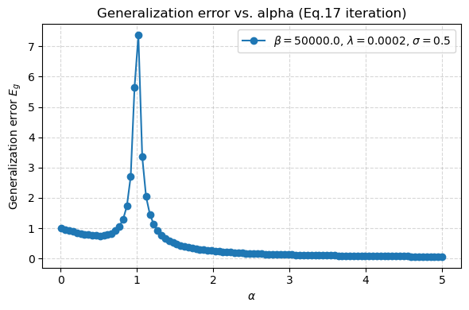
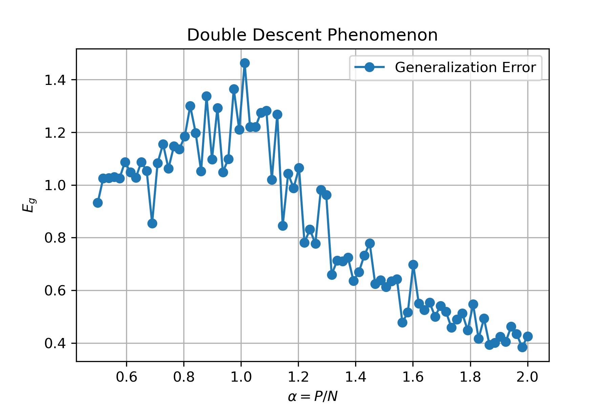

使用副本方法研究神经网络训练中双下降（doube decent）现象。
Reference: * 作业题目
问题
给定一个数据集 D = {xμ, yμ}μ = 1P，其中 xμ ∈ ℝN，每个元素服从高斯分布 𝒩(0, 1)。标签 yμ 由下式产生：
$$ y^\mu = \frac{1}{\sqrt{N}} \sum_{i=1}^N w_i^* x_i^\mu + \sigma \epsilon^\mu $$
其中 ϵμ ∼ 𝒩(0, 1)，真实权重满足 $|\bf{w}^*|^2 = N$。
考虑如下哈密顿量：
$$ H(w) = \frac{1}{2\lambda} \sum_{\mu=1}^P \Big( \sum_{i=1}^N \frac{w_i x_i^\mu}{\sqrt N} - y^\mu \Big)^2 + \frac{1}{2} \sum_{i=1}^N w_i^2 $$
其中w为学习到的参数，w*为目标参数（最优超参），这是一个 teacher-student 模型。
研究任务：
- 用复本理论计算泛化误差：
$$ E_g = \Big\lang \Big( \frac{1}{\sqrt{N}} \sum_{i=1}^N (w_i - w_i^*) x_i^\mu \Big)^2 \Big\rangle_x $$
并绘制 Eg 与 α = P/N 的关系，考察不同 σ, λ, β 情况。同时比较有限 N 数值实验结果与理论是否一致。
在低温极限下，当 λ = 0，研究零噪声与有限噪声情形下 Eg 与 α 的关系。
（进阶）分析是否能得到 Eg 随 α 的解析关系？自由能对 α 的导数是否出现不连续（一级相变）？是否能观测到双下降现象？
副本计算
$$ P = \frac{H(\bf{w})}{Z}\quad Z=\int d \bf{w} \exp\{-\beta H(\bf{w})\} $$
并且有： $$ f = \frac{-1}{\beta N}\lang\ln Z\rang $$
利用副本技巧： $$ f = \lim_{N\to \infin, n\to \infin}\frac{-1}{\beta N n}\lang\ln Z^n\rang = \lim_{N\to \infin, n\to \infin}\frac{-1}{\beta N n}\ln\lang Z^n\rang $$
计算配分函数的副本平均：
$$ \begin{align*} \lang Z^n \rang &= \left\lang \int \prod_{a}^n\prod_i^N d w^a_i \exp\{-\beta H(\bf{w})\} \right\rang \\ &= \left\lang \int \prod_{a}^n\prod_i^N d w^a_i \exp\left\{\frac{-\beta}{2\lambda} \sum_{\mu=1}^P \Big( \sum_{i=1}^N \frac{w_i^a x_i^\mu}{\sqrt N} - y^\mu \Big)^2 - \frac{\beta}{2} \sum_{i=1}^N {w_i^a}^2\right\} \right\rang \\ &= \left\lang \int \prod_{a}^n\prod_i^N d w^a_i \exp\left\{\frac{-\beta}{2\lambda} \sum_{\mu=1}^P \Big( \sum_{i=1}^N \frac{w_i^a x_i^\mu}{\sqrt N} - \frac{1}{\sqrt{N}} \sum_{i=1}^N w_i^* x_i^\mu - \sigma \epsilon^\mu \Big)^2 - \frac{\beta}{2} \sum_{i=1}^N {w_i^a}^2\right\} \right\rang \\ &= \left\lang \int \exp\left\{\frac{-\beta}{2\lambda} \sum_{a}^{n}\sum_{\mu=1}^P \Big( \sum_{i=1}^N \frac{w_i^a x_i^\mu}{\sqrt N} - \frac{1}{\sqrt{N}} \sum_{i=1}^N w_i^* x_i^\mu - \sigma \epsilon^\mu \Big)^2 - \frac{\beta}{2} \sum_{a}^{n}\sum_{i=1}^N {w_i^a}^2\right\} \left(\prod_{a}^n\prod_i^N d w^a_i \right) \right\rang \end{align*} $$
数据分布变为隐藏层分布
将对整体的期望，写为对于指数的期望： $$ \begin{align} \lang Z^n \rang = \int \exp N\left\{-\alpha G_E - \frac{\beta}{2 N} \sum_{a}^{n}\sum_{i=1}^N {w_i^a}^2\right\} \prod_{a}^n\prod_i^N d w^a_i \end{align} $$
对于数据的期望，其中对于P的求和，可以认为是独立同分布，因此可以直接将求和符号去掉P = αN，可以得到：
$$ \begin{align} G_E = -\ln \left\lang\exp \left\{ \frac{-\beta}{2\lambda} \sum_{a}^{n} \Big( \sum_{i=1}^N \frac{w_i^a x_i^\mu}{\sqrt N} - \frac{1}{\sqrt{N}} \sum_{i=1}^N w_i^* x_i^\mu - \sigma \epsilon^\mu \Big)^2 \right\}\right\rang \end{align} $$
接下来引入局域场： $$\begin{align} v^a &= \sum_{i=1}^N \frac{w_i^a x_i^\mu}{\sqrt N} \\ u &= \sum_{i=1}^N \frac{w_i^* x_i^\mu}{\sqrt N} \end{align}$$
由于xi ∼ 𝒩(0, 1)，任意高斯向量的线性变换仍然是高斯向量，可以得到局域场联合分布的协方差：
(u, {va}) ∼ 𝒩(0, Σ), Σuu = 1, Σuva = ra, Σvavb = qab
其中r和q为序参量： $$\begin{align} r^a &= \sum_{i=1}^N \frac{w_i^a w_i^*}{ N} \\ q^{ab} &= \sum_{i=1}^N \frac{w_i^a w_i^b}{N} \end{align}$$
可以将配分函数进一步写为： $$ \begin{align*} \lang Z^n \rang &= \int \exp \left\{ N\left(-\alpha G_E - \frac{\beta}{2 } \sum_{a}^{n} q^{aa}\right)\right\} \ \prod_{a\leq b}^n\delta(N q^{ab}-\sum_i^N w_i^a w_i^b) \ \prod_{a=1}^n \delta(Nr^a -\sum_i^N w_i^a w_i^*)\ d N r^a d N q^{a b}\prod_i^N d w_i^a \\ &= \int \exp \left\{ N\left(-\alpha G_E - \frac{\beta}{2 } \sum_{a}^{n} q^{aa}\right)\right\} \ \prod_{a\leq b}^n\left(\frac{1}{2\pi i}\int d\hat q^{ab}\ \exp\Big[-N\hat q^{ab} q^{ab}+\hat q^{ab}\sum_i w_i^{(a)}w_i^{(b)}\Big]\right) \ \prod_{a=1}^n \left(\frac{1}{2\pi i}\int d\hat r_a\ \exp\!\Big[-N\hat r_a r_a+\hat r_a \sum_i w_i^* w_i^{(a)}\Big]\right)\ d N r^a d N q^{a b}\prod_i^N d w_i^a \\ &=\int \left(\prod_a^n \frac{N d r^a d \hat r^a}{2\pi i} \right) \left(\prod_{a\leq b}^n \frac{N d q^{ab} d \hat q^{ab}}{2\pi i} \right) \ \exp \left\{ -\alpha N G_E\right\} \\ &\quad \int\prod_{i,a}^{N,n} d w_i^a\exp \left\{ N\left( - \frac{\beta}{2 } \sum_{a}^{n} q^{aa}\ - \hat q^{ab} q^{ab}+\frac{1}{N}\hat q^{ab}\sum_i w_i^{a}w_i^{b} \ -\hat r_a r_a+\frac{1}{N}\hat r_a \sum_i w_i^* w_i^{a} \right)\right\} \\ &=\int \left(\prod_a^n \frac{N d r^a d \hat r^a}{2\pi i} \right) \left(\prod_{a\leq b}^n \frac{N d q^{ab} d \hat q^{ab}}{2\pi i} \right) \ \exp \left\{ -\alpha N G_E\right\} \\ &\quad \exp \left\{ N\left( - \frac{\beta}{2 } \sum_{a}^{n} q^{aa}\ - \hat q^{ab} q^{ab} \ -\hat r_a r_a \right)\right\} \\ &\quad \int\prod_{i,a}^{N,n} d w_i^a\exp \left\{ N\left( \frac{1}{N}\hat q^{ab}\sum_i w_i^{a}w_i^{b} \ +\frac{1}{N}\hat r_a \sum_i w_i^* w_i^{a} \right)\right\} \\ &=\int \left(\prod_a^n \frac{N d r^a d \hat r^a}{2\pi i} \right) \left(\prod_{a\leq b}^n \frac{N d q^{ab} d \hat q^{ab}}{2\pi i} \right) \exp \left\{ N\left(-\alpha G_E+G_S\right)\right\} \end{align*} $$
其中有： $$ \begin{align*} G_E &= -\ln \left\lang\exp \left\{ \frac{-\beta}{2\lambda} \sum_{a}^{n} \Big( \sum_{i=1}^N \frac{w_i^a x_i^\mu}{\sqrt N} - \frac{1}{\sqrt{N}} \sum_{i=1}^N w_i^* x_i^\mu - \sigma \epsilon^\mu \Big)^2 \right\}\right\rang \\ &= -\ln \left\lang\exp \left\{ \frac{-\beta}{2\lambda} \sum_{a}^{n} \Big( v^a - u - \sigma \epsilon \Big)^2 \right\}\right\rang \end{align*} $$ 以及： $$ \begin{align*} G_S &= \left( - \frac{\beta}{2 } \sum_{a}^{n} q^{aa}\ - \sum_{a\leq b}^n\hat q^{ab} q^{ab} \ - \sum_a^n\hat r_a r_a \right) \ +\frac{1}{N}\ln\int\prod_{i,a}^{N,n} d w_i^a\exp \left\{ \hat q^{ab}\sum_i w_i^{a}w_i^{b} \ +\hat r_a \sum_i w_i^* w_i^{a} \right\} \\ \end{align*} $$
目前为止整体计算时严格的，成功将输入数据x通过线性变换与权重w相耦合，产生新的序参量u、v。由于为线性变换，且知道x的分布情况，因此可以将u、v的联合分布写出来。同时产生必要的方差项，也称其为overlap项，在我看来就是将两个矩阵进行交叠，衡量矩阵交叠程度（即矩阵相似性）。
然后通过将δ转变为高斯积分，将积分测度进行修改。
接下来采用副本对称假设，将求解目标近似： $$\begin{align} r^a = r&,\quad \hat r^a = \hat r\\ q^{ab} = \delta_{ab}q'+(1-\delta_{ab})q&,\quad \hat q^{ab}=\delta_{ab}(-\frac{1}{2}\hat q')+(1-\delta_{ab})\hat q \end{align}$$
接下来结合副本技巧逐个求解GS与GE项。
熵项GS
$$ \begin{align*} G_S &= \left( - \frac{\beta}{2 } \sum_{a}^{n} q^{aa}\ - \sum_{a\leq b}^n\hat q^{ab} q^{ab} \ - \sum_a^n\hat r_a r_a \right) \ +\frac{1}{N}\ln\int\prod_{i,a}^{N,n} d w_i^a\exp \left\{ \hat q^{ab}\sum_i w_i^{a}w_i^{b} \ +\hat r_a \sum_i w_i^* w_i^{a} \right\} \\ &= \left( - \frac{n \beta}{2 } q'\ - \frac{n(n-1)}{2}\hat q q \ + \frac{n}{2}\hat q' q' - n \hat r r \right) \ +\frac{1}{N}\ln\int\prod_{i,a}^{N,n} d w_i^a\exp \left\{ \frac{1}{2}\hat q\sum_{ab}\sum_i w_i^{a}w_i^{b} \ -\frac{1}{2}(\hat q'+\hat q)\sum_a \sum_i w_i^{a}w_i^{a} \ +\hat r \sum_a\sum_i w_i^* w_i^{a} \right\} \\ &= \left( - \frac{n \beta}{2 } q'\ - \frac{n(n-1)}{2}\hat q q \ + \frac{n}{2}\hat q' q' - n \hat r r \right) \ +\frac{1}{N}\ln\int\prod_{i,a}^{N,n} d w_i^a\exp \left\{ \frac{1}{2}\hat q\sum_i \left(\sum_{a}w_i^{a}\right)^2 \ -\frac{1}{2}(\hat q'+\hat q)\sum_a \sum_i w_i^{a}w_i^{a} \ +\hat r \sum_a\sum_i w_i^* w_i^{a} \right\} \\ &= \left( - \frac{n \beta}{2 } q'\ - \frac{n(n-1)}{2}\hat q q \ + \frac{n}{2}\hat q' q' - n \hat r r \right) \ +\frac{1}{N}\ln\int\prod_i D z_i\int\prod_{a}^{n} d w_i^a\exp \left\{ \sqrt{\hat q}\sum_i \sum_{a}w_i^{a}z_i \ -\frac{1}{2}(\hat q'+\hat q)\sum_a \sum_i w_i^{a}w_i^{a} \ +\hat r \sum_a\sum_i w_i^* w_i^{a} \right\} \\ &= \left( - \frac{n \beta}{2 } q'\ - \frac{n(n-1)}{2}\hat q q \ + \frac{n}{2}\hat q' q' - n \hat r r \right) \ +\frac{1}{N}\ln \left[\int D z \left[\int d w\exp \left\{ \sqrt{\hat q} w z \ -\frac{1}{2}(\hat q'+\hat q) w w \ +\hat r w^* w \right\} \right]^n\right]^{N}\\ &= \left( - \frac{n \beta}{2 } q'\ - \frac{n(n-1)}{2}\hat q q \ + \frac{n}{2}\hat q' q' - n \hat r r \right) \ +\ln \int D z \left[\int d w\exp \left\{ \sqrt{\hat q} w z \ -\frac{1}{2}(\hat q'+\hat q) w w \ +\hat r w^* w \right\} \right]^n\\ \end{align*} $$
上面最后一步通过引入辅助变量，将平方项变为线性项，从而把副本的数量n之间的耦合消去。由于假设lim N → ∞，因此可以将⟪zn⟫ ∼ N(−αGE + GS)，从而可以分别求GS与GE的极限。
$$ \begin{align*} \lim_{n\to 0}\frac{G_S}{n} &= \left( - \frac{\beta}{2 } q'\ + \frac{1}{2}\hat q q \ + \frac{1}{2}\hat q' q' - \hat r r \right)\ +\lim_{n\to 0}\frac{1}{n}\ln \int D z \left[\int d w\exp \left\{ \sqrt{\hat q} w z \ -\frac{1}{2}(\hat q'+\hat q) w w \ +\hat r w^* w \right\} \right]^n\\ &= \left( - \frac{\beta}{2 } q'\ + \frac{1}{2}\hat q q \ + \frac{1}{2}\hat q' q' - \hat r r \right)\ +\int D z \ln\int d w\exp \left\{ \sqrt{\hat q} w z \ -\frac{1}{2}(\hat q'+\hat q) w w \ +\hat r w^* w \right\}\\ &= - \frac{\beta}{2 } q'\ + \frac{1}{2}\hat q q \ + \frac{1}{2}\hat q' q' - \hat r r +\frac{1}{2}\ln{2\pi}-\frac{1}{2}\ln(\hat q+\hat q')+\frac{\hat q+\hat r^2 {w^*}^2}{2(\hat q+\hat q')}\\ \end{align*} $$
由于约束$|\bf{w}^*|^2 = N$，而$\bf w$为一个N维向量，因此平均下w*2 = 1。
$$ \begin{align*} \lim_{n\to 0}\frac{G_S}{n} &= - \frac{\beta}{2 } q'\ + \frac{1}{2}\hat q q \ + \frac{1}{2}\hat q' q' - \hat r r +\frac{1}{2}\ln{2\pi}-\frac{1}{2}\ln(\hat q+\hat q')+\frac{\hat q+\hat r^2}{2(\hat q+\hat q')}\\ \end{align*} $$
能量项GE
$$ \begin{align*} G_E &= -\ln \left\lang\exp \left\{ \frac{-\beta}{2\lambda} \sum_{a}^{n} \Big( v^a - u - \sigma \epsilon \Big)^2 \right\}\right\rang \end{align*} $$
其中期望是对输入数据x进行，并且x符合一个特定分布，在经过线性变换之后我们将其转化为v、u之间的组合。因为高斯分布在经过线性变化之后依旧是高斯分布，接下来期望就是计算u、v。
已经知道分布为: (u, {va}) ∼ 𝒩(0, Σ), Σuu = 1, Σuva = r, Σvavb = δabq′ + (1 − δab)q
计算混合高斯分布的条件分布，由高斯条件分布公式得到： 𝔼[va | u] = r u, Cov(v | u) = C = (q’ − q) In + (q − r2) 11⊤
其中 1 = (1, …, 1)⊤ ∈ ℝn。
记 c ≡ u − σϵ。则 $\sum_{a=1}^n (u-v_a-\sigma\epsilon)^2 \;=\; \|\;v - c\,\mathbf 1\;\|_2^2$， 在给定 u, ϵ 下，v − c1 ∼ 𝒩 ((ru − c)1, C)。
高斯二次型的矩母函数给出（对固定 u, ϵ）： $$\mathbb E\!\left[\exp\!\left(-\frac{\beta}{2\lambda}\|v-c\mathbf 1\|^2\right)\Big|\,u,\epsilon\right] = \det\!\big(I_n+\tfrac{\beta}{\lambda}C\big)^{-1/2}\; \exp\!\left(-\frac{\beta}{2\lambda}(r u-c)^2\,\mathbf 1^\top(I_n+\tfrac{\beta}{\lambda}C)^{-1}\mathbf 1\right)$$
利用 C 的“秩一更新”谱分解
C = (q’ − q)In + (q − r2)11⊤ 的特征值： λ⟂ = q’ − q (重数 n − 1), λ∥ = q’ − q + n(q − r2) 因此 $$\begin{align*} &\det(I_n+\tfrac{\beta}{\lambda}C)=\big(1+\tfrac{\beta}{\lambda}(q'-q)\big)^{n-1}\!\big(1+\tfrac{\beta}{\lambda}\lambda_\parallel\big)\\ &\mathbf 1^\top(I_n+\tfrac{\beta}{\lambda}C)^{-1}\mathbf 1 =\frac{n}{\,1+\tfrac{\beta}{\lambda}\lambda_\parallel\,} \end{align*}$$
把 c = u − σϵ、(ru − c) = (r − 1)u + σϵ 代回得： $$\begin{aligned} &\mathbb E\!\left[\exp\!\left(-\frac{\beta}{2\lambda}\sum_a (u-v_a-\sigma\epsilon)^2\right)\Big|u,\epsilon\right]\\ &\quad=\Big(1+\tfrac{\beta}{\lambda}(q'-q)\Big)^{-\frac{n-1}{2}} \Big(1+\tfrac{\beta}{\lambda}\big(q'-q+n(q-r^2)\big)\Big)^{-\frac{1}{2}} \\ &\qquad\times \exp\!\left(-\frac{\beta}{2\lambda}\,\frac{n\,\big((r-1)u+\sigma\epsilon\big)^2}{\,1+\tfrac{\beta}{\lambda}\big(q'-q+n(q-r^2)\big)\,}\right). \end{aligned}$$
再对 u, ϵ 做平均并取 n → 0
u, ϵ 独立标准高斯，(r − 1)u + σϵ ∼ 𝒩(0, (r − 1)2 + σ2)。用 $$\mathbb E\big[e^{-\frac{a}{2}Z^2}\big]=(1+a)^{-1/2}\quad (Z\sim\mathcal N(0,1))$$
并只保留 O(n) 项（因为最后要计算 limn → 0GE/n），记 $$A\equiv 1+\frac{\beta}{\lambda}(q'-q)=\frac{\lambda+\beta(q'-q)}{\lambda}$$
则 $$\lim_{n\to 0}\frac{G_E}{n} =\frac{1}{2}\ln A +\frac{1}{2}\frac{\beta}{\lambda A}\Big[q-2r+1+\sigma^2\Big]$$
把 ln A = ln (λ + β(q′ − q)) − ln λ 展开，并注意 λA = λ + β(q′ − q)，得到： $$\lim_{n\to 0}\frac{G_E}{n} =\frac{1}{2}\ln\!\big[\lambda+\beta(q’-q)\big]-\frac{1}{2}\ln\lambda +\frac{1}{2}\,\frac{\beta\,(q-2r+1+\sigma^2)}{\lambda+\beta(q’-q)}$$
更为简洁的做法
核心观念：对 Y = (u − v1 − σϵ, …, u − vn − σϵ)⊤
有 $$\mathbb E\!\left[e^{-\frac{\beta}{2\lambda}\|Y\|^2}\right] =\det\!\Big(I_n+\tfrac{\beta}{\lambda}\,\mathrm{Cov}(Y)\Big)^{-1/2}$$
而 Cov(Y) = a In + b 11⊤, a = q’ − q, b = 1 − 2r + σ2 + q
这种“aI + b11⊤”矩阵的特征值是：a（重数 n-1）与 a + bn（沿 1 方向）。于是 $$G_E=\tfrac12\ln\det\!\Big(I+\tfrac{\beta}{\lambda}\mathrm{Cov}(Y)\Big) =\tfrac12\Big[(n-1)\ln\!\big(1+\tfrac{\beta}{\lambda}a\big) +\ln\!\big(1+\tfrac{\beta}{\lambda}(a+bn)\big)\Big]$$
纯标量的函数；现在对它做 n → 0，利用 Mathematica 计算:
1 | $Assumptions = {beta > 0, lambda > 0, sigma >= 0, |
得到一致的结果： $$\frac{1}{2}\ln\!\big[\lambda+\beta(q’-q)\big]-\frac{1}{2}\ln\lambda +\frac{1}{2}\,\frac{\beta\,(q-2r+1+\sigma^2)}{\lambda+\beta(q’-q)}$$
鞍点方程
1 | (* 参数假设 *) |
然后将解进行简化 1
2
3
4
5
6
7
8
9
10
11
12
13
14
15
16
17(* 定义两组解 *)
sol1 = {
rHat -> -(r/(q - qPrime)),
qHat -> (q - r^2)/(q - qPrime)^2,
qHatPrime -> (-2 q + qPrime + r^2)/(q - qPrime)^2
};
sol2 = {
rHat -> (alpha beta)/(lambda - beta q + beta qPrime),
qHat -> (alpha beta^2 (1 + q - 2 r + sigma^2))/(lambda + beta (-q + qPrime))^2,
qHatPrime -> beta + (alpha beta (lambda + beta (-1 - 2 q + qPrime + 2 r - sigma^2)))/(lambda + beta (-q + qPrime))^2
};
(* 对比化简：将 sol1 代回鞍点方程，看能否简化为 sol2 *)
Simplify[sol1 /. sol2,
Assumptions -> {alpha > 0, beta > 0, lambda > 0, sigma >= 0,
r ∈ Reals, q ∈ Reals, qPrime ∈ Reals}]
得到迭代方程为： $$\begin{aligned} \frac{\alpha \beta}{\lambda - \beta q + \beta q'} &\;\;=\;\; -\frac{r}{\,q - q'} \, \\ \frac{\alpha \beta^{2}\,\big(1 + q - 2r + \sigma^{2}\big)}{\big(\lambda + \beta(-q+q')\big)^{2}} &\;\;=\;\; \frac{q - r^{2}}{(q - q')^{2}} \, \\ \beta + \frac{\alpha \beta \,\big(\lambda + \beta(-1 - 2q + q' + 2r - \sigma^{2})\big)}{\big(\lambda + \beta(-q+q')\big)^{2}} &\;\;=\;\; \frac{-2q + q' + r^{2}}{(q - q')^{2}} \end{aligned}$$
先记 Δ ≡ q’ − q。
- 更新 Δ
由第1式： $$ \quad \Delta^{\text{new}}\;=\;\frac{r^{(t)}\,\lambda}{\beta(\alpha-r^{(t)})}\ \tag{U1}$$ 给定 r(t) 先算 Δnew。
- 更新 q
把第2式整理为对 q 的固定点： $${q-r^2}\;=\;\alpha\Big(\frac{\beta\Delta}{\lambda+\beta\Delta}\Big)^2 \Big(1+q-2r+\sigma^2\Big)$$ 定义$K\;\equiv\;\alpha\Big(\frac{\beta\Delta}{\lambda+\beta\Delta}\Big)^2,$可解得 $$ \ q^{\text{new}}\;=\;\frac{\,r^{2}+K\,(1-2r+\sigma^{2})\,}{\,1-K\,}\ \tag{U2}$$ 注意这一步只用到 r, Δ，不需要旧的 q。
- 更新 q′
最简便的是用 Δ 回填： q′new = qnew + Δnew
- 一种稳健的循环（带阻尼）
给定初值 r(0) ∈ (0, min {α, 1})，循环： $$\begin{aligned} &\Delta^\star\leftarrow \frac{r^{(t)}\lambda}{\beta(\alpha-r^{(t)})},\quad K\leftarrow \alpha\Big(\frac{\beta\Delta^\star}{\lambda+\beta\Delta^\star}\Big)^2,\\ &q^\star\leftarrow \frac{r^{(t)2}+K(1-2r^{(t)}+\sigma^2)}{1-K},\qquad q’^\star\leftarrow q^\star+\Delta^\star,\\ &\text{（可选：用第3式的残差 } \mathcal R(r^{(t)}) \text{ 调整 } r)\\ &r^{(t+1)}\leftarrow (1-\eta)\,r^{(t)}+\eta\cdot \frac{\alpha\beta\,\Delta^\star}{\lambda+\beta\Delta^\star}\quad (\eta\in(0,1]) . \end{aligned}$$ • 若不想用方程(3)做校正，可以直接用 (U1) 的左式更新 r（如上），通常加一点阻尼 $$会更稳。 • 也可以把第3式写成一维残差 g(r) = 0，每步做一次牛顿/割线更新 r。
- 用第3式构造一维残差并更新 r（可替代 (U1)）
先用 r 生成 Δ(r), q(r)（按 (U2) 里的 K 与 (U1) 的 Δ 公式），再把 $$g(r)\;\equiv\;\underbrace{\beta+\dfrac{\alpha\beta\,[\lambda+\beta(-1-q+\Delta(r)+2r-\sigma^2)]}{(\lambda+\beta\Delta(r))^2}}_{\text{LHS (3)}} \;-\;\underbrace{\Big(\frac{r^{2}-q(r)}{\Delta(r)^2}+\frac{1}{\Delta(r)}\Big)}_{\text{RHS(3)}}.$$ 做一维根求解： $$ r^{(t+1)} \;=\; r^{(t)} - \eta \,\frac{g(r^{(t)})}{g’(r^{(t)})}\ \ \text{或}\ \ r^{(t+1)}=r^{(t)}-\eta\,\frac{g(r^{(t)})}{g(r^{(t)})-g(r^{(t-1)})}\,(r^{(t)}-r^{(t-1)}).$$ • 第一种是牛顿（需要数导，数值差分即可）； • 第二种是割线（不需要导数），η ∈ (0, 1] 为阻尼。
收敛判据：$|r{(t+1)}-r{(t)}|+|q{(t+1)}-q{(t)}|+|q’{(t+1)}-q’{(t)}|<$且 |g(r(t + 1))| < ε。
泛化误差
泛化误差为: $$\begin{aligned} E_g &= \Big\lang \Big( \frac{1}{\sqrt{N}} \sum_{i=1}^N (w_i - w_i^*) x_i^\mu \Big)^2 \Big\rangle_x \\ &= \Big\lang (v - u)^2 \Big\rangle_x \\ &= \mathrm{Var}(v)+\mathrm{Var}(u)-2\,\mathrm{Cov}(u,v)\\ &= 1 + q' - 2r \end{aligned}$$
实验与理论结果
通过迭代方程，得到双下降图像： 
实验得到，这里有一个tric，epoch一定要大： 